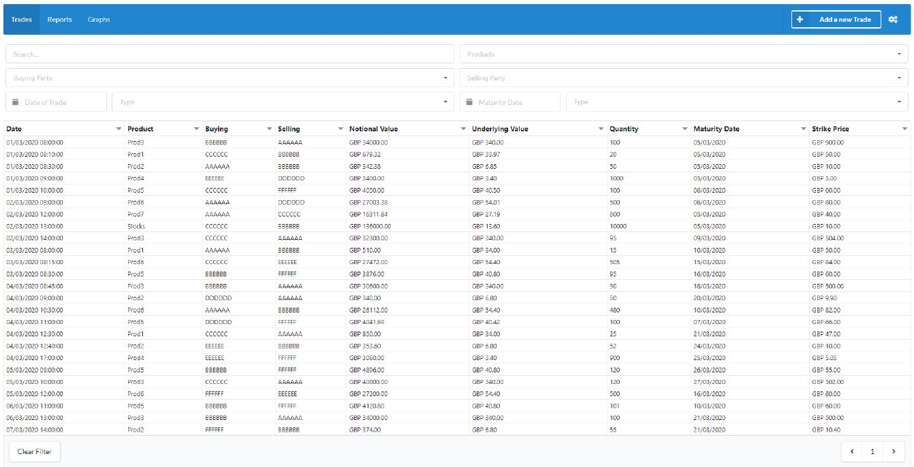
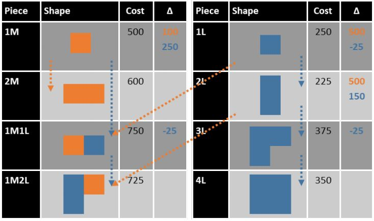
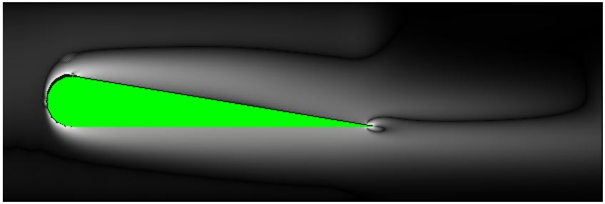
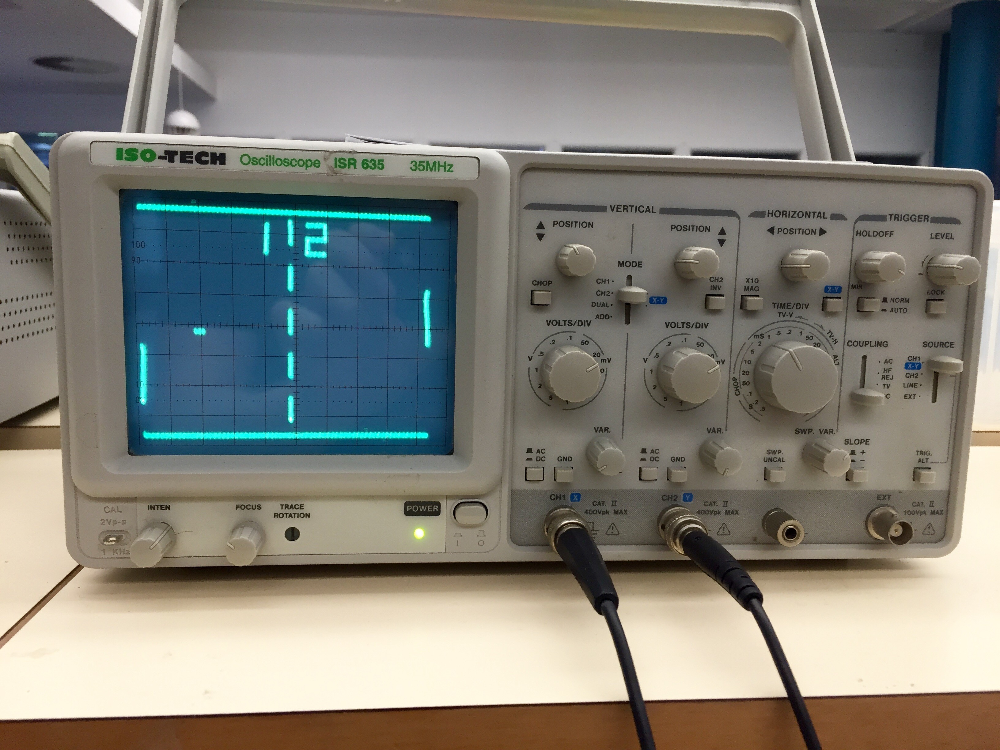
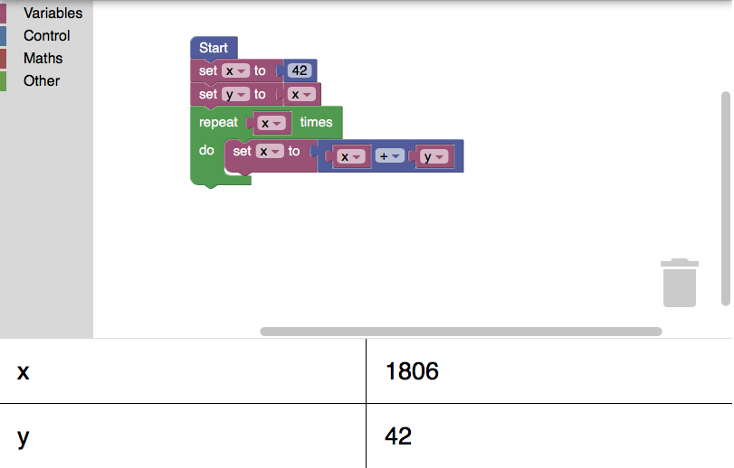

Worked in a team of 6 people, carfully modularising and delegating the work for optimal collaboration.
Went through the full process of Software Engineering, from Requirements Gathering to Design to Implementation, at each stage writing a large report detailing our work.
Frontend built with React (JavaScript), backend built with Java and an SQL database, providing a REST API to the frontend for communication.
Automatically learns, detects and corrects input errors using AI via a Naive Bayes model.
Highly scalable implementation via pagination and indexing for queries.
Robust and fully documented API detailing the endpoints.
20 page report detailing the implementation, with state machine diagrams explaining the UX-flow, UML diagrams explaining the class structure, and UI wireframes.
Derivative Trade Manager (Year 2)
Coursework for the Software Engineering module sponsored by Deutsche Bank, involving the design and implementation of a full-stack application to manage derivative trades.
Java  JavaScript
JavaScript  SQL
SQL 

Abstracted the problem into a game of "Tetris" and solved the game of Tetris.
Modelled the task of scheduling the timetable around the various time and cost constraints as a Constraint Satisfaction Problem (CSP), and implemented CSP solving algorithms to find the optimal assignment.
Found the optimal assignment by implementing Informed Search algorithms.
Timestable Scheduler (Year 2)
Coursework for the Artificial Intelligence module, involving the implementation of a class timetable scheduler in Python.
Python 

Implemented low-level optimisation techniques on the C code, making it run in 1/10th of the original time (~80s to ~7s).
Utilised parallelisation by applying multi-threading using OpenMP, and vectorisation using SSE Intrinsics. Made the code parralilsable by removing inter-loop dependencies.
Applied general optimisation techniques such as loop unrolling, loop fusion & fission, precomputing static conditionals, and removing unexecuted code.
Utilised timers to assess the impact of my optimisations for each significant portion of the program.
Physics Simulation Optimisation (Year 2)
Coursework for the Advanced Computer Architecture module, involving the optimisation of a two-dimensional computational fluid dynamics simulator.
C 
PLM Parser and Evaluator (Year 2)
Coursework for the Formal Languages module, involving the implementation of a parser and evaluator for a made-up programming language (PLM - Programming Language of the Moment).
Java
Packet Sniffer (Year 2)
Coursework for the Operating Systems and Computer Networks module, involving the implementation of packet sniffer to detect SYN Flood, ARP Poisoning and URL Blacklist attacks.
C
Propositional Logic Prover (Year 2)
Coursework for the Logic and Verification module, involving the implementation of a logical evaluator to determine whether an input logical theorem is a tautology.

Witter (Year 1)
Java programming coursework, for the Design of Information Structures module. Involved writing the backend data store for a "Witter" application (akin to Twitter).
Java

Primitive game logic, such as game loops and rendering.
Extensive report detailing and evaluating our result.
Implementation involved creating an API between the oscilloscope screen and the C code, which provided a set of primitive operations such as drawing rectangles and other shapes, which were later combined to form the whole game.
Worked with a partner, involving careful planning and collaboration.
Pong (Year 1)
C programming coursework, for the Computer Organisation and Architecture module. Implemented the classic "Pong" game on the screen of an oscilloscope via an ARM controller.
C

Implementation is elegant and idiomatic, harnessing Haskell's powerful abstractions.
Implementation utilised a Monad Transformer, after extensive refactoring.
Obtained full marks for the implementation, and awarded two Purple λ awards for achieving marks among the year's highest for Functional Programming.
Scratch Clone (Year 1)
Haskell programming coursework, for the Functional Programming module. Implemented an interpreter to compute the resulting memory state, from an input program in Scratch block format and the initial memory state.